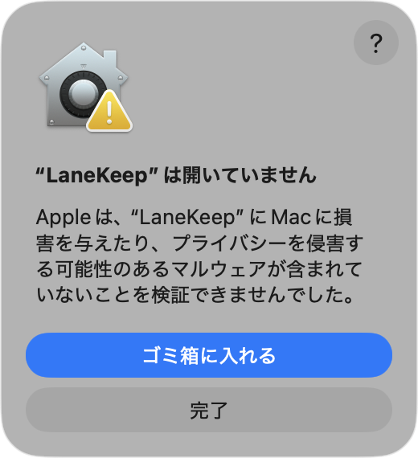
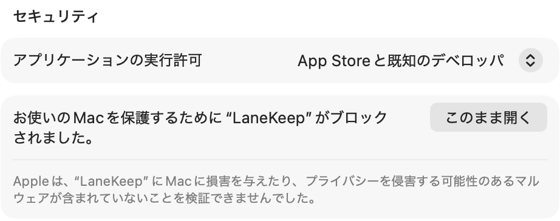
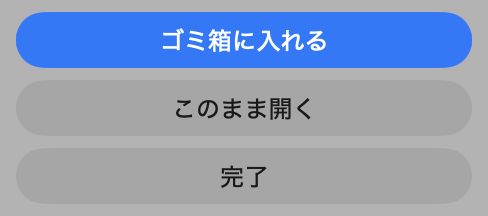
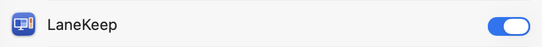

5開くと、画面の右上（メニューバー）に案内が出ます
案内の「システム設定を開く」から、LaneKeep をオンにします。ウィンドウを動かすための許可です。Dock には出ません。
警告は、Apple の有料の開発者登録をしていないために出るもので、壊れているわけではありません。

青い「ゴミ箱に入れる」は押さないでください。

下の「設定を開く」で開き、いちばん下まで送るとあります。押したら、Touch ID かパスワードで確かめます。
「“LaneKeep” を開きますか?」と出たら、まん中のボタンです。

青い「ゴミ箱に入れる」は押さないでください。出ないときは、LaneKeep を開き直してください。
案内の「システム設定を開く」から、LaneKeep をオンにします。ウィンドウを動かすための許可です。Dock には出ません。
システム設定 ›「プライバシーとセキュリティ」›「アクセシビリティ」

← ダブルクリックで、システム設定が開きます「プライバシーとセキュリティ」のいちばん下が 3 の欄です。設定を開くだけで、ほかには何もしません。